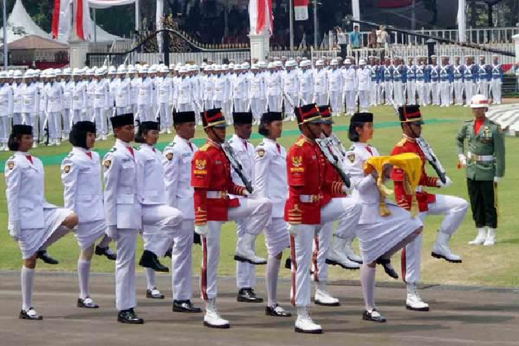

Paskibraka adalah singkatan dari Pasukan Pengibar Bendera Pusaka dengan tugas utamanya untuk mengibarkan dan menurunkan Bendera Pusaka (kini duplikat) dalam upacara peringatan Hari Kemerdekaan Republik Indonesia dan Proklamasi Kemerdekaan Republik Indonesia di tiga tempat, yakni tingkat kabupaten/kota, provinsi, dan nasional. Anggotanya berasal dari pelajar SMA/sederajat kelas 10 dan/atau 11
Pasukan Pengibar Bendera Pusaka (Paskibraka) merupakan putra-putri terbaik bangsa, kader pemimpin bangsa yang direkrut dan diseleksi secara bertahap dan berjenjang melalui sistem dan mekanisme pendidikan dan pelatihan yang menanamkan nilai-nilai kebangsaan serta penguatan aspek mental dan fisik agar memiliki kemampuan prima dalam melaksanakan tugas sebagai pasukan pengibar bendera pusaka.Paskibraka berada dibawah binaan dan asuhan Kementerian Pemuda dan Olahraga Republik Indonesia.
Pada saat hari penugasan (17 Agustus), Paskibraka akan dibagi menjadi dua tim tugas, yaitu pasukan yang bertugas Pagi sebagai pengibar bendera dan tugas Sore sebagai pasukan penurun bendera. Pembagian pasukan ini akan dibentuk sejak masa latihan dengan tiap tim diberi nama unik yang saling melengkapi, contohnya Tim "Nakula" dan Tim "Sadewa",[5] kedua tim ini tidak akan mengetahui apakah timnya akan bertugas sebagai pengibar atau bertugas sebagai penurun sampai pada hari penugasan dan baru akan diumumkan oleh tim Pelatih tiga jam sebelum upacara dimulai (untuk di tingkat Nasional),dan juga di tingkat daerah lain. Tradisi ini telah dilakukan sejak angkatan-angkatan terdahulu dan berguna untuk melatih kesiapsediaan serta mental anggota Paskibraka. Penentuan ini dinilai oleh tim Pelatih berdasarkan performa dalam baris berbaris tiap tim dengan menentukan tim mana yang cocok untuk tampil pada saat pengibaran dan tim mana yang cocok untuk tampil pada saat penurunan.
Paskibraka diawali dengan seleksi dari tingkat Kota/Kabupaten pada bulan Maret dan April. Bagi yang lolos mengikuti seleksi untuk ke tingkat Provinsi akan dikirim pada bulan Mei. Dari tingkat Provinsi, bagi yang lolos seleksi untuk ke tingkat nasional akan dikirim dua pasang putra dan putri ke seleksi tingkat nasional pada bulan Juni. Kemudian, seleksi tingkat nasional akan menetapkan satu pasangan putra dan putri terbaik dari setiap provinsi untuk mewakili provinsi yang bersangkutan menjadi anggota Paskibraka nasional yang akan bertugas di Istana Merdeka, Jakarta pada 17 Agustus nanti.